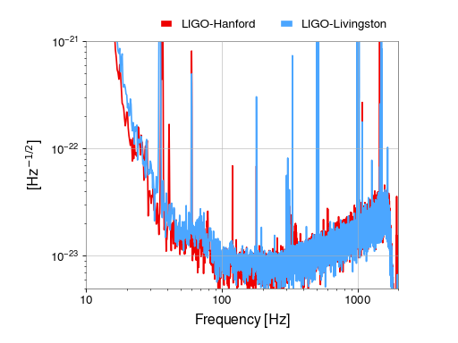

1. Calculating and plotting a FrequencySeries¶
The LIGO Laboratory has publicly released the strain data around the time of the GW150914 gravitational-wave detection; we can use these to calculate and display the spectral sensitivity of each of the detectors at that time.
In order to generate a FrequencySeries we need to import the
TimeSeries and use
fetch_open_data() to download the strain
records:
from gwpy.timeseries import TimeSeries
lho = TimeSeries.fetch_open_data('H1', 1126259446, 1126259478)
llo = TimeSeries.fetch_open_data('L1', 1126259446, 1126259478)
We can then call the asd() method to
calculated the amplitude spectral density for each
TimeSeries:
lhoasd = lho.asd(4, 2)
lloasd = llo.asd(4, 2)
We can then plot() the spectra using the ‘standard’
colour scheme:
plot = lhoasd.plot(label='LIGO-Hanford', color='gwpy:ligo-hanford')
ax = plot.gca()
ax.plot(lloasd, label='LIGO-Livingston', color='gwpy:ligo-livingston')
ax.set_xlim(10, 2000)
ax.set_ylim(5e-24, 1e-21)
ax.legend(frameon=False, bbox_to_anchor=(1., 1.), loc='lower right', ncol=2)
plot.show()
(png)
{kind=link}
